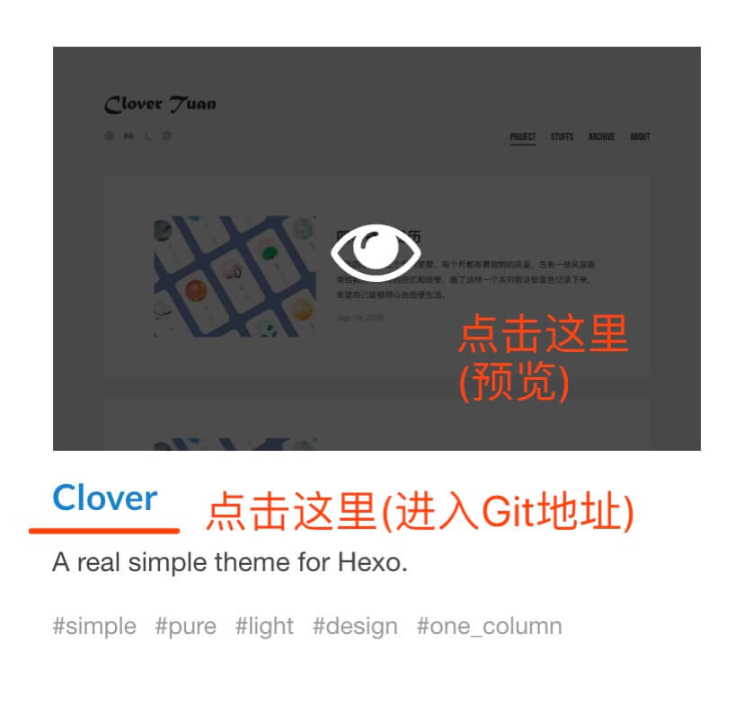
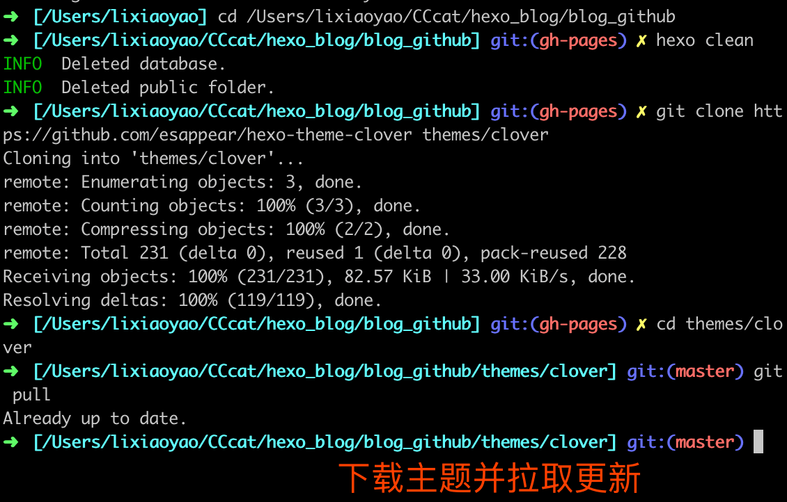
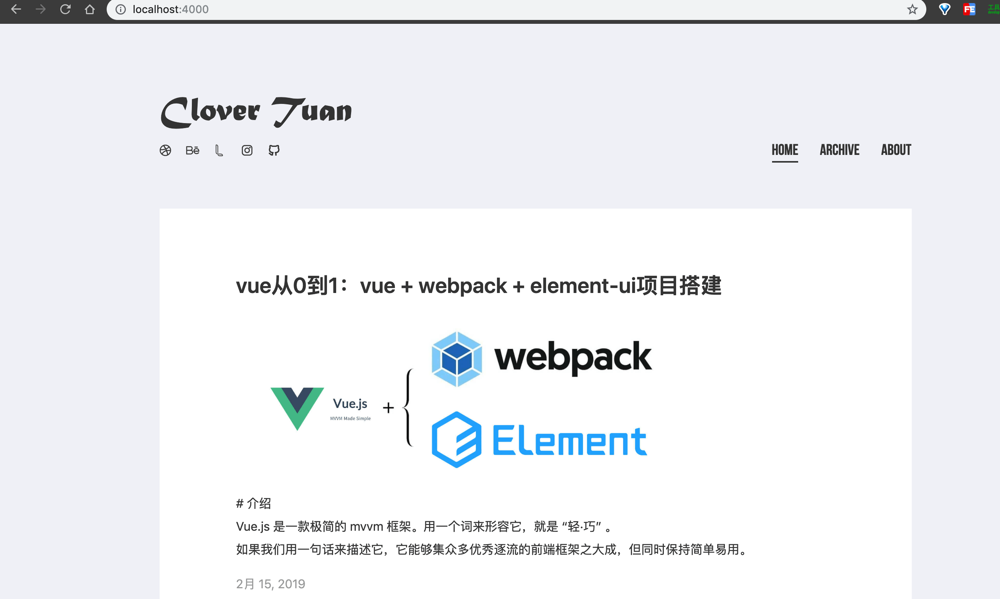

（四）教你任意更换 Hexo 主题风格
本文于 513 天之前发表，文中内容可能已经过时。

# 前言
创建 Hexo 主题非常容易，您只要在 themes 文件夹内，新增一个任意名称的文件夹，并修改_config.yml 内的 theme 设定，即可切换主题。
这篇文章，简单的讲解了更换 Hexo 主题风格的操作。
想换任意 Hexo 主题都可以！
这篇文章示例主题是：clover
# 步骤
1.主题风格
打开链接 https://hexo.io/themes/ ，预览、挑选自己喜欢的主题风格。
- 复制自己喜欢的主题的 Git 地址：
- 查看主题说明：(README.md)
2.开始下载主题
1 | $ cd 'to/your/path' #项目放置的路径 |
- 主题可能会不定时优化和更新，更新主题代码:
1 | $ cd themes/clover |
图示：

3.修改根目录下的 _config.yml 文件，修改主题名称。
1 | theme: clover #主题名称 要与 主题文件夹名称一致 |
4.添加主题插件（这个根据不同主题的安装要求下载）
1 | $ cd ../../ #回到你的博客文件根目录 |
5.运行博客
1 | $ hexo clean && hexo s -g # 就是清除、生成、启动 |
启动之后，打开浏览器，在地址栏输入：http://localhost:4000 ，你就会看到 Hexo 的示例页面。
图示：

6.发布博客
1 | $ hexo clean && hexo d -g # 就是清除、生成、部署 |
# Error
1.执行deploy时报错
1 | ERROR Deployer not found: git |
- 解决方法：
1 | $ npm install hexo-cli -g |
然后再提交就可以了！
2.执行 deploy 时报错 1
1 | Error: Permission denied (publickey) |
解决方法：
①.这种情况就是要在 github 添加 publickey, 允许 SSH 方式上传代码。步骤如下：
②.官方链接地址 解决办法。
方法 ①：
- 生成 key（xxxx 换成你自己 github 用户名）
1 | $ ssh-keygen -t rsa -C “xxxxxxxxx” |
- 打印 key（第一步生成时会在控制台打印出地址）
1 | $ cat /Users/xuneng/.ssh/id_rsa.pub |
- 进入到该
github项目的设置，把打印出的key的所有字符串，拷贝到Deploy keys中保存即可。
（勾选允许可写操作）
- 测试 github SSH 连通性
1 | $ ssh -T git@github.com |
- 显示如下信息则配置 SSH 成功！其中的 CC-cat 是用户名。
Hi CC-cat! You've successfully authenticated, but GitHub does not provide shell access.然后再提交就可以了！
3.执行 deploy 时报错 2
1 | error deployer not found:git |
问题出现的原因是：你更换了 theme，导致 git 提交的内容与服务器上完全不匹配。
- 解决办法：（在博客目录中执行）
1 | $ npm install hexo-deployer-git --save |
然后再提交就可以了！
# 结语
到这里，文章就结束啦。其他自定义的内容，请查看README.md就可以啦!
(∩_∩)